นางสาวภลดา แสนศรี
ชื่อเล่น : อิงฟ้า
โรงเรียนบ้านบึง"อุตสาหกรรมนุเคราะห์"
Portfolio
ชื่อเล่น : อิงฟ้า
โรงเรียนบ้านบึง"อุตสาหกรรมนุเคราะห์"
Portfolio
ชื่อ-นามสกุล : นางสาวภลดา แสนศรี
ชื่อเล่น : อิงฟ้า
วันเกิด : 1 ธันวาคม 2551
จังหวัด : ชลบุรี
โรงเรียนกุญแจคริสเตียนวิทยา
โรงเรียนบ้านบึง"อุตสาหกรรมนุเคราะห์"
GPAX 4 เทอม : 3.91
ชอบการคิดวิเคราะห์และการแก้โจทย์ปัญหา เพราะเป็นสิ่งที่ท้าทายและสามารถค้นหาวิธีแก้ปัญหาได้หลายรูปแบบ
มีความสนใจในการเล่น Sudoku และใช้การคิดอย่างเป็นระบบในการแก้ปริศนาตัวเลข
สามารถวิเคราะห์โจทย์และวางแนวทางการแก้ปัญหา อย่างเป็นขั้นตอนและมีเหตุผล
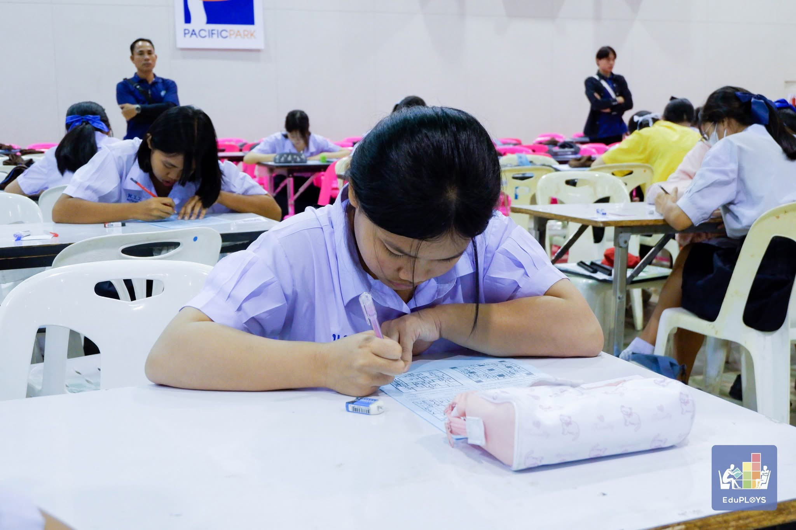
เป็นตัวแทนโรงเรียนเข้าร่วมการแข่งขันซูโดกุ สามารถทำโจทย์ปริศนาได้ครบทุกกระดาน และทำคะแนนได้เต็ม 100 คะแนน คว้าอันดับที่ 11 ระดับเหรียญเงิน จากการแข่งขันระดับภาคตะวันออกและภาคกลาง ประจำปี 2569
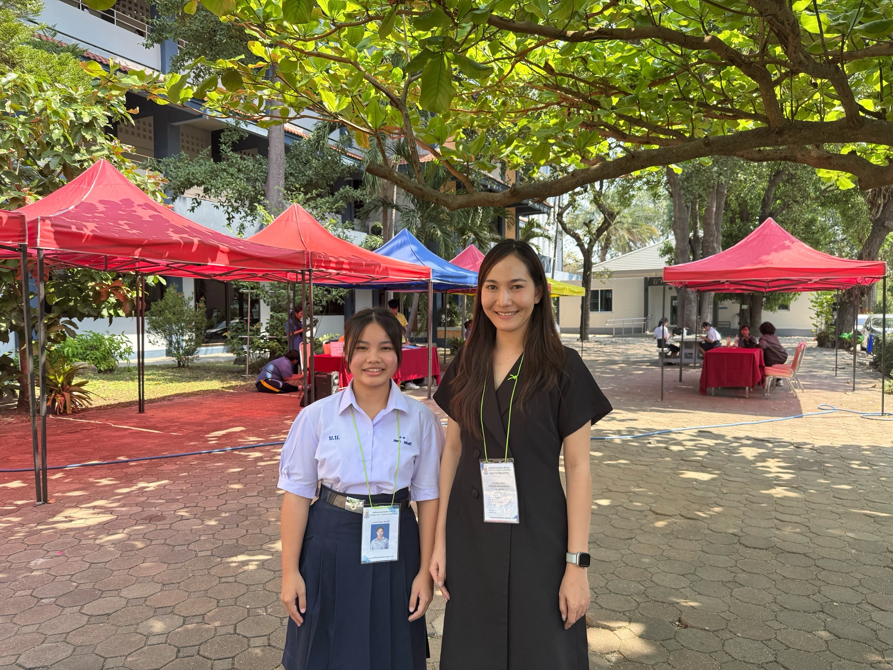
เป็นตัวแทนโรงเรียนเข้าร่วมการแข่งขันซูโดกุ ระดับสำนักงานเขตพื้นที่การศึกษา ทำคะแนนได้ 88.50 คะแนน ได้รับอันดับที่ 11 ระดับเหรียญทอง
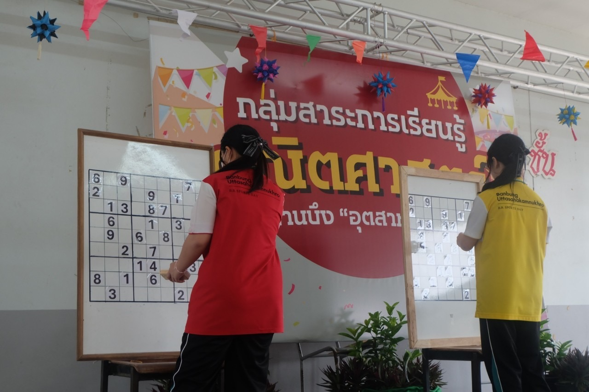
เข้าร่วมการแข่งขันซูโดกุ ระดับมัธยมศึกษาตอนปลาย สามารถทำกระดาษปริศนาได้ครบทุกกระดาน ผ่านเข้าสู่รอบชิงชนะเลิศ และได้รับรางวัลชนะเลิศ
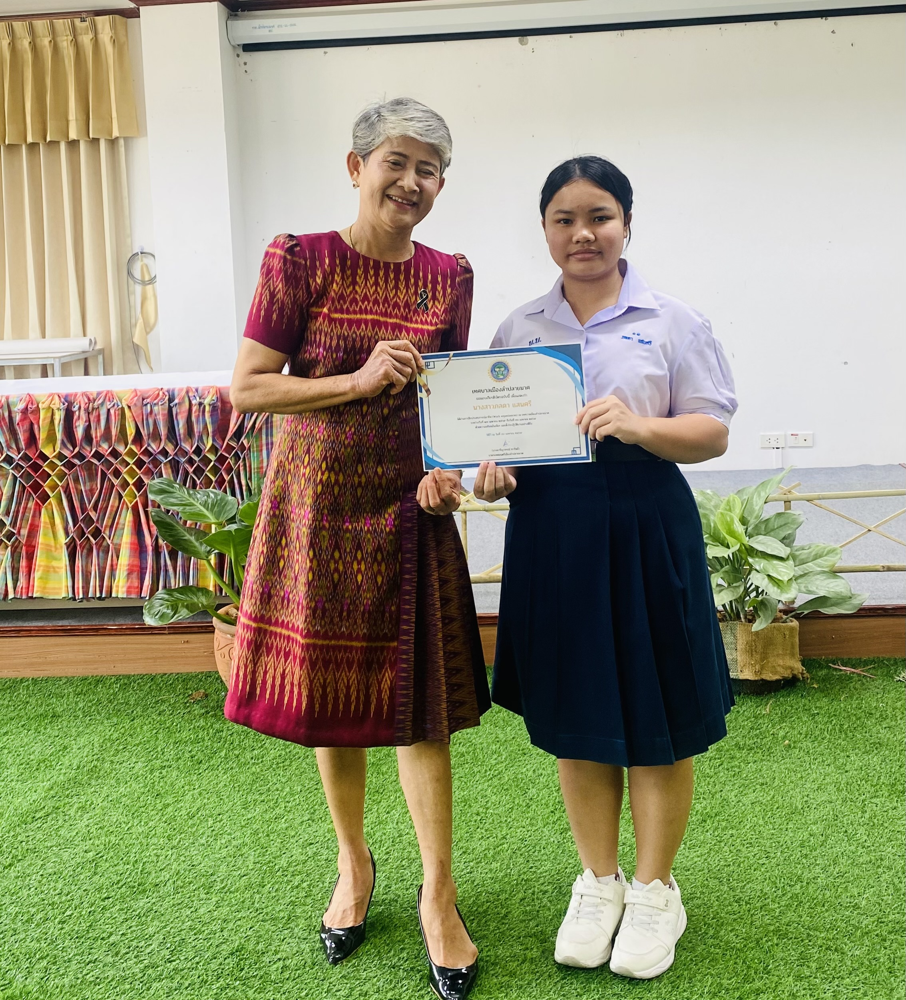
ช่วงแรกของการฝึกงานได้มีส่วนร่วมในงานจัดการข้อมูล ด้วยการรวบรวมและจัดเก็บสถิติของอาสาสมัครสาธารณสุขประจำหมู่บ้าน (อสม.) อย่างเป็นระบบ นอกจากนี้ยังได้ร่วมดำเนินกิจกรรมในโรงเรียนผู้สูงอายุ และโครงการศูนย์ดูแลผู้สูงอายุระหว่างวัน ซึ่งเปิดโอกาสให้ได้เข้าไปมีส่วนร่วม ในการสร้างรอยยิ้ม ความสุข และส่งเสริมสุขภาวะที่ดีให้แก่ผู้สูงวัยในชุมชน นอกเหนือจากงานในสำนักงานแล้ว ยังได้ลงพื้นที่ปฏิบัติงานภาคสนาม ผ่านกิจกรรมปลูกป่าเพื่ออนุรักษ์ธรรมชาติ รวมถึงร่วมสำรวจปักแนวเขต และจัดเก็บข้อมูลพันธุกรรมพืชในโครงการ อพ.สธ. ร่วมกับชุมชนและผู้เชี่ยวชาญ
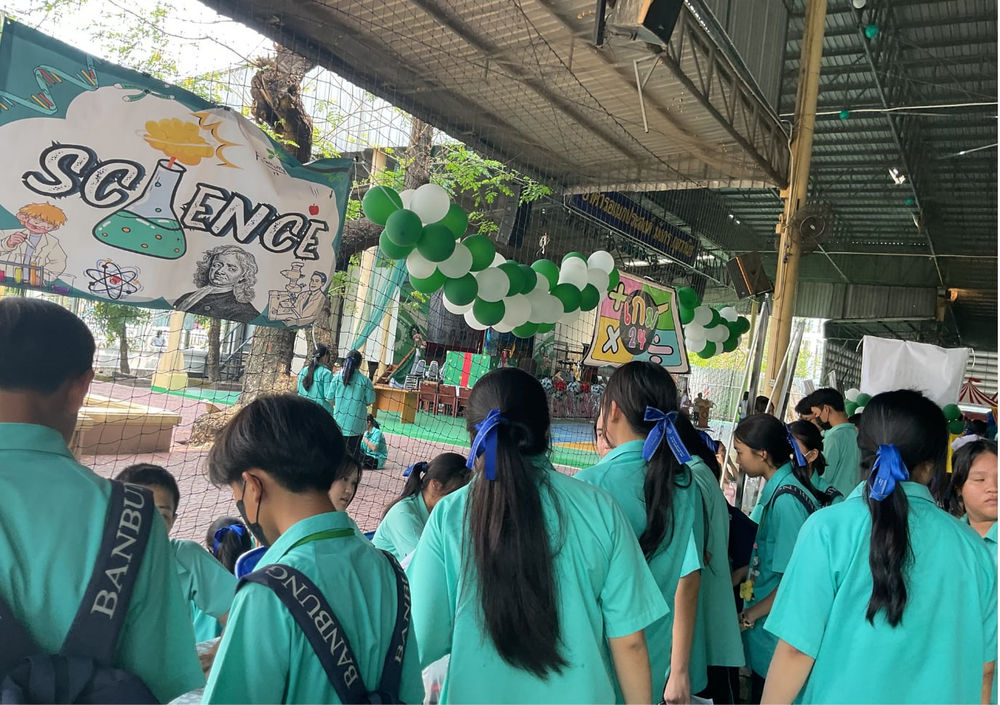
ได้เป็นนักเรียนจิตอาสาประจำบูธแผนการเรียนวิทยาศาสตร์-คณิตศาสตร์ (Gifted Program) ฐานเกม 24 โดยรับผิดชอบการต้อนรับ อธิบายกติกา และสาธิตวิธีการเล่น การทำงานเพื่อส่วนรวมในครั้งนี้ ดิฉันได้เรียนรู้ทักษะที่สำคัญทั้งความกล้าแสดงออกในการพูดคุย กับผู้คนหลากหลาย และการฝึกทักษะการสื่อสารเพื่อการถ่ายทอดข้อมูล ที่ซับซ้อนให้เข้าใจง่ายและเป็นกันเอง
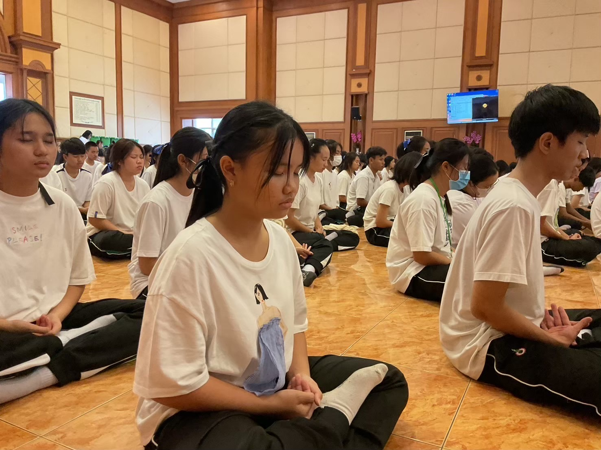
การเข้าร่วมกิจกรรมในครั้งนี้ทำให้ดิฉันได้เรียนรู้และตระหนักถึง ความสำคัญของคุณธรรม จริยธรรม ระเบียบวินัย ความรับผิดชอบ และการอยู่ร่วมกับผู้อื่นในสังคม ผ่านกิจกรรมที่ช่วยส่งเสริม การพัฒนาทั้งด้านความคิด จิตใจ และพฤติกรรม นอกจากนี้ยังได้ฝึกสมาธิ การควบคุมตนเอง การเคารพผู้อื่น และการนำหลักคุณธรรม มาปรับใช้ในชีวิตประจำวัน
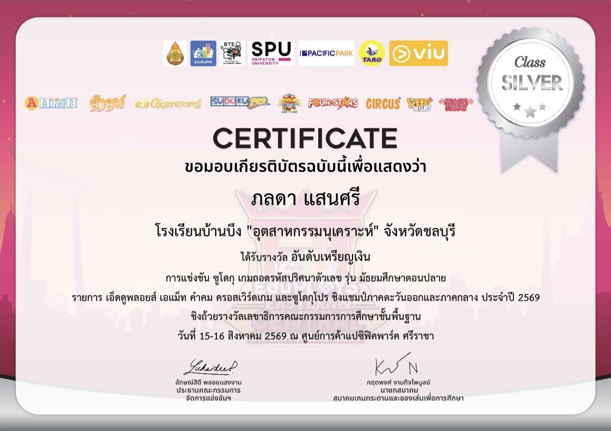
ได้รับรางวัลอันดับเหรียญเงิน การแข่งขันซูโดกุ เกมถอดรหัสปริศนาตัวเลข รุ่นมัธยมศึกษาตอนปลาย ณ วันที่ 15-16 สิงหาคม 2569
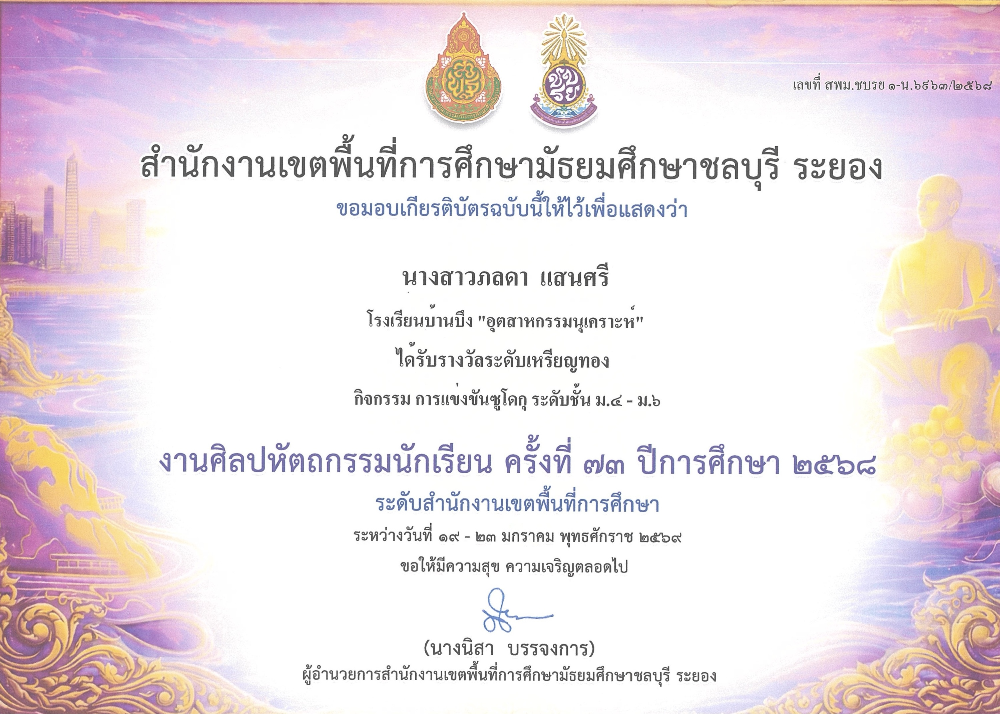
ได้รับรางวัลระดับเหรียญทอง กิจกรรมการแข่งขันซูโดกุ ระดับชั้น ม.4-ม.6 งานศิลปหัตถกรรมนักเรียน ครั้งที่ 73 ปีการศึกษา 2568
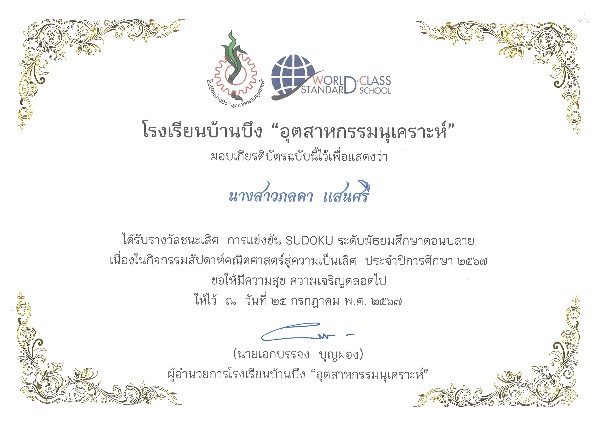
ได้รับรางวัลชนะเลิศ การแข่งขันซูโดกุ ระดับมัธยมศึกษาตอนปลาย เนื่องในกิจกรรม สัปดาห์คณิตศาสตร์สู่ความเป็นเลิศ ประจำปีการศึกษา 2567
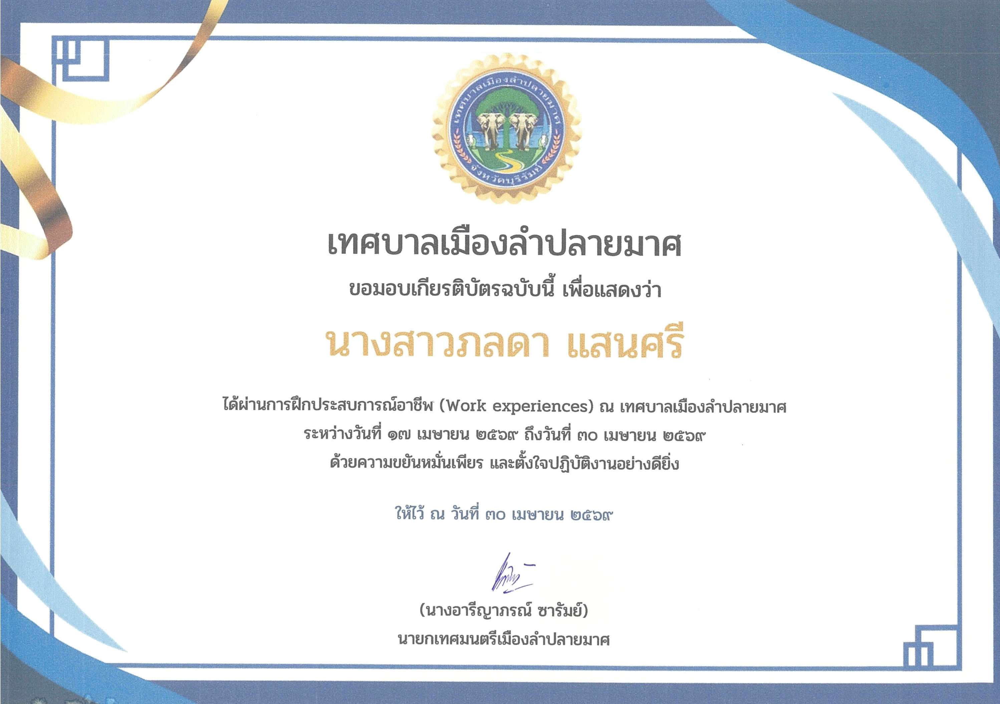
ได้ผ่านการฝึกประสบการณ์อาชีพ (Work experiences) ณ เทศบาลเมืองลำปลายมาศ ระหว่างวันที่ 17 เมษายน 2569 ถึงวันที่ 30 เมษายน 2569
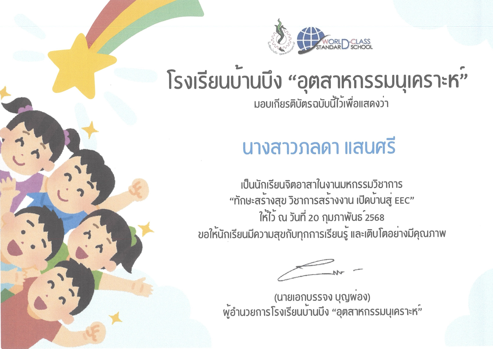
เป็นนักเรียนจิตอาสาในงานมหกรรมวิชาการ “ทักษะสร้างสุข วิชาการสร้างงาน เปิดบ้านสู่ EEC” ให้ไว้ ณ วันที่ 20 กุมภาพันธ์ 2568
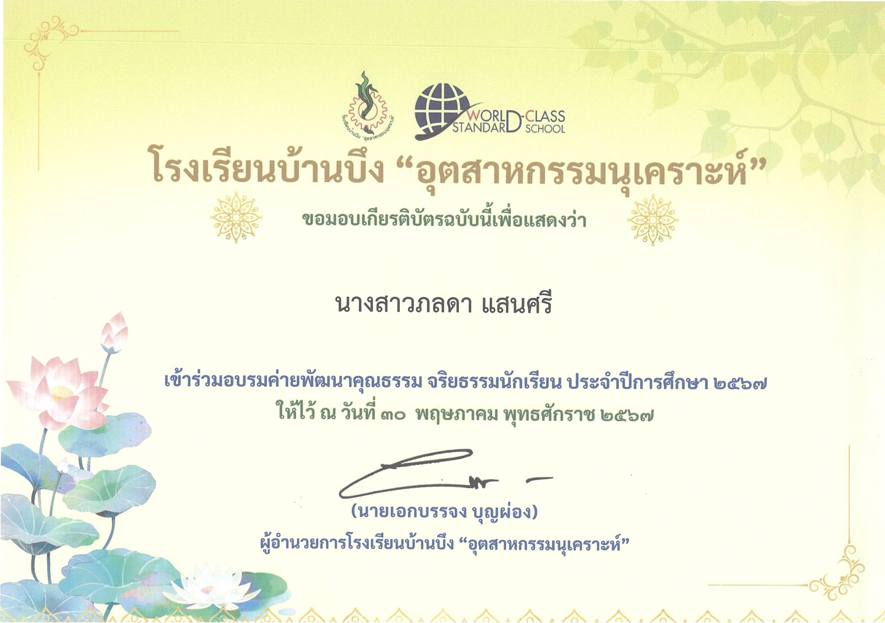
เข้าร่วมอบรมค่ายพัฒนาคุณธรรม จริยธรรมนักเรียน ประจำปีการศึกษา 2567
แรงบันดาลใจในการอยากเป็นครูเกิดจากคุณครู ที่คอยให้คำแนะนำและสร้างแรงบันดาลใจในการเรียน รวมถึงคุณยายที่เคยเรียนด้านการสอน ทำให้รู้สึกประทับใจในอาชีพครู และอยากเป็นครูที่สามารถสร้างแรงบันดาลใจ ให้กับเด็ก ๆ ได้เช่นเดียวกัน
ในอนาคตมีเป้าหมายที่จะศึกษาต่อ คณะครุศาสตร์หรือศึกษาศาสตร์ สาขาคณิตศาสตร์ และมุ่งหวังที่จะประกอบอาชีพเป็นข้าราชการครู เพื่อถ่ายทอดความรู้และสร้างแรงบันดาลใจให้กับนักเรียน